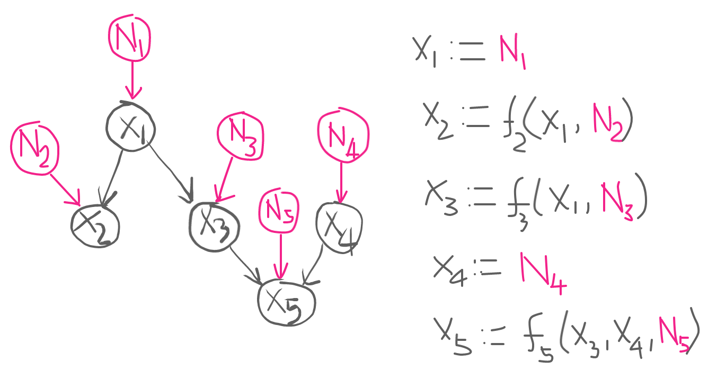

What are noise variables in Structural Equation Model?
08 Nov 2020Given a causal graph \(\mathcal{G}\)1 of variables \(X_1, \dotsc, X_n\), a structural equation model (SEM) represents the data-generating process of each node \(X_j\) as a function \(f_j\) of its parents \(\mathrm{PA}_j\) in \(\mathcal{G}\), and unobserved noise \(N_j\), i.e. \[X_j := f_j(\textrm{PA}_j, N_j),\] where noise variables $N_1, \dotsc, N_n$ are statistically jointly independent.2 Each structural assignment represents the causal mechanism that generates child $X_j$ from its parents $\mathrm{PA}_j$. Here, we will explore two questions regarding unobserved noise variables:
What do noise variables represent in reality?
The formal definition suggests that a noise variable $N_j$ in SEM represents factors that only influence the corresponding observed variable $X_j$—but not other noises or observed variables.3 Moreover, as noise $N_j$ is unobserved, it also represents “phenomenon” due to which $X_j$ cannot be explained alone—deterministically—by the observed values of its parents $\textrm{pa}_j$. One example of such phenomenon is random error that is always present in a measurement. It could also be other unmeasurable factors (e.g. mood) that influence $X_j$.
Can we identify noise variables from data?
In practice, the underlying SEM is seldom known. Instead, what we often have is a sample drawn from the joint distribution $P_{X_1, \dotsc, X_n}$. We then have to learn the SEM from the sample. This boils down to learning functions $f_j$ and unobserved noises $N_j$. Fortunately, learning the underlying functional relationship between variables is a well-studied problem with a wide range of solutions (Shalev-Shwartz & Ben-David, 2014). Learning the unobserved noise, however, is a non-trivial learning problem for generic functions and noises.
To see this,4 consider the bivariate causal graph $X \rightarrow Y$ induced by the SEM $Y := f(X, N)$, where $N$ is statistically independent of $X$, i.e. $N \mathrel{\unicode{x2AEB}} X$. Suppose that noise $N$ attains values in the finite set $\mathcal{N} := \{1, \dotsc, \xi \}$. For each value $n \in \mathcal{N}$ that $N$ takes, the assignment $Y := f(X, N)$ reduces to the deterministic causal mechanism $Y := f(X, n)$. For a non-smooth function, for instance, $N$ may randomly select a function $f_n(X)$ for each value of $N$ from the set $\mathcal{F} := \{f(X, n) =: f_n(X) \mid n \in \mathcal{N}\}$. Learning such SCM (with $\xi := |\mathcal{N}|$ functions) from finite data is difficult, specially as noise $N$ is unobserved.
This problem of learning SEMs from data for a given causal graph is also known as “SEM Identification Problem” (Spirtes et al., 1998). Although SEM identification is infeasible for a generic class of SEMs as shown above, the problem becomes feasible with additional assumptions that restrict the class of SEMs. Tian (2009), for instance, studied identifiability criteria for a class of linear SEMs—also known as linear additive noise models (ANMs)—with the possibility of having correlated noise variables. For ANMs, a more general (but weaker) identification result is possible without restricting the class of functions.
Suppose that the causal graph $\mathcal{G}$ is induced by ANM. That is, the structural assignment of each node $X_j$ in $\mathcal{G}$ consists of an additive noise: \[ X_j := f_j(\mathrm{PA}_j) + N_j. \]
Then, from a sample drawn from the joint distribution $P_{X_j, \mathrm{PA}_j}$, we can estimate $f_j$ using regression5 $\hat{f}_j(\textrm{pa}_j) = \mathbb{E}[X_j \mid \textrm{PA}_j=\textrm{pa}_j]$. The residual $\epsilon_j = X_j - \hat{f}_j(\textrm{PA}_j)$ then gives us the (possibly mean-shifted) noise variable that is uncorrelated to parents $\textrm{PA}_j$, i.e. $\mathrm{Cov}(\epsilon_j, \textrm{PA}_j)=0$.
Note that zero correlation is a weaker condition than statistical independence. The latter implies the former, but not the other way around. In special cases (e.g. multivariate Gaussian distribution), however, mean independence implies statistical independence (see here). Thus, for jointly Gaussian distributed noise and parents, we can recover the noise up to statistical independence.
We still have to learn the regression function from data. To this end, we optimise some “loss function”—that measures how well a function $f$ fits the data—over a class of functions $\mathcal{F}$. Although regression estimates of many well-known loss functions (e.g. $\ell_1$, $\ell_2$) converge to the conditional mean asymptotically as the sample size approches infinity, for a finite sample size, some loss functions yield optimal results than the others depending on the distribution of noise. Whereas $\ell_1$-loss function gives optimal result for a Laplace distributed noise, $\ell_2$ loss provides optimal result for a Gaussian noise.6 If the distribution of the unobserved noise is unknown (which is often the case), it is hard to tell which loss function will yield optimal result. A promising approach then is to use a regression procedure that minimises dependence between residuals and regressors based on a non-parametric test of indpendence (Mooij et al., 2009). The non-convexity of the resulting optimisation problem, however, makes it difficult to solve; as such, we have to rely on variants of Newton’s method that are approximate and often time-consuming.
Lastly, as causal inference rests on assumptions, it is crucial to check our assumptions, whenever possible. In case of ANM, for instance, we can run a hypothesis test to check if the unobserved noise we recover from data is statistically independent of regressors.
References
- Pearl, J. (2012). The Causal Foundations of Structural Equation Modeling. Guilford Press, New York.
- Spirtes, P., Richardson, T., Meek, C., Scheines, R., & Glymour, C. (1998). Using Path Diagrams as a Structural Equation Modeling Tool. Sociological Methods & Research, 27(2), 182–225.
- Tian, J. (2009). Parameter Identification in a Class of Linear Structural Equation Models. IJCAI 2009, Proceedings of the 21st International Joint Conference on Artificial Intelligence, Pasadena, California, USA, July 11-17, 2009, 1970–1975.
- Schölkopf, B. (2019). Causality for Machine Learning.
- Shalev-Shwartz, S., & Ben-David, S. (2014). Understanding Machine Learning: From Theory to Algorithms. Cambridge University Press.
- Peters, J., Janzing, D., & Schölkopf, B. (2017). Elements of Causal Inference - Foundations and Learning Algorithms. The MIT Press.
- Mooij, J. M., Janzing, D., Peters, J., & Schölkopf, B. (2009). Regression by dependence minimization and its application to causal inference in additive noise models. Proceedings of the 26th International Conference on Machine Learning, 745–752.
- Cover, T. M., & Thomas, J. A. (2006). Elements of Information Theory 2nd Edition (Wiley Series in Telecommunications and Signal Processing). Wiley-Interscience.
Footnotes
-
A causal graph is a directed acyclic graph that represents data-generating process that operates sequentially along its arrows. ↩
-
A toy causal graph alongside its SEM.  ↩
-
Pearl (Pearl, 2012) writes, “they represent observed or unobserved background factors that the modeler decides to keep unexplained—that is, factors that influence but are not influenced by the other variables (called “endogenous”) in the model … The[y]
formerare shaped by physical reality (e.g., genetic factors, socioeconomic conditions), not by analysis; they are treated as any other variable, though we often cannot measure their values precisely and must resign ourselves to merely acknowledging their existence and assessing qualitatively how they relate to other variables in the system.” ↩ -
The difficulty in learning unobserved noises in SEM from data for generic choices of functions and noises is also explained well in Schölkopf (2019), and the general idea is briefly mentioned in Peters et al. (Chapter 2, 2017) when drawing the connection between SEM and the principle of independent mechanism. ↩
-
A regression function $r:\mathcal{X} \rightarrow \mathcal{Y}$ (where $\mathcal{Y}$ is often $\mathbb{R}$) gives us the expected value of the response variable $Y$ given an instance $x$ of the regressor $X$, i.e. $r(x) = \mathbb{E}[Y \mid X=x]$. It may belong to some finite (e.g. set of straight lines) or infinite family $\mathcal{R} \ni r$. A regression model from any family $\mathcal{R}$ can always be written as \[ Y = r(X) + \epsilon, \] where $\mathbb{E}[\epsilon] = 0$. This is because we can define $\epsilon = Y - r(X)$ s.t. $Y = Y + r(X) - r(X)$ $= r(X) + \epsilon$, and mean of the residual $\epsilon$ is
$$ \begin{align} \mathbb{E}[\epsilon] &= \mathbb{E}[\mathbb{E}[\epsilon \mid X]]\\ &= \mathbb{E}[\mathbb{E}[ Y - r(X) \mid X]]\\ &= \mathbb{E}[\mathbb{E}[ Y \mid X] - \mathbb{E}[r(X) \mid X]]\\ &= \mathbb{E}[r(X) - r(X)]\\ &= 0 \end{align} $$Above, we observe that $\mathbb{E}[\epsilon \mid X] = 0$. Thus, we have $\mathbb{E}[\epsilon \mid X] = \mathbb{E}[\epsilon]$. That is, residual $\epsilon$ and input $X$ are mean independent. Mean independence also implies uncorrelatedness, $\textrm{Cov}(\epsilon, X)=0$. Note that if $\epsilon$ has a non-zero mean then we can incorporate that into $r(X)$ as an additive constant. ↩
-
The $\ell_1$-loss minimisation yields median for the parameter, whereas $\ell_1$-loss yields mean. Note that the maximum likelihood estimates of the parameters of a Gaussian distribution can be computed from the sample mean. For a Laplacian distribution, they can be computed using sample median. Therefore, $\ell_2$ loss function is appropriate for a Gaussian noise, whereas $\ell_1$ loss function is suited for a Laplacian noise. ↩